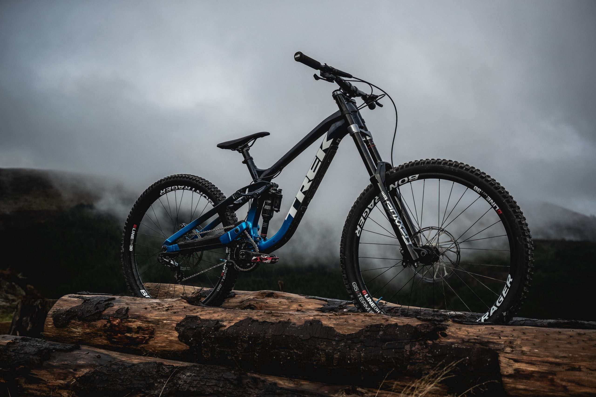

About Trek Bicycles Founded in 1976, Trek Bicycles is a world-renowned brand committed to building high-performance bikes that push the boundaries of technology and design. Whether you're a competitive cyclist, an adventure enthusiast, or someone who simply enjoys cycling for fun, Trek has a bike for you. We offer a wide range of bicycles, from road and mountain bikes to electric bikes, all engineered for quality, durability, and comfort. At Trek, innovation is at the heart of everything we do, ensuring our bikes are built to perform at the highest levels. Our goal is simple: to inspire and support cyclists around the world, one ride at a time.
